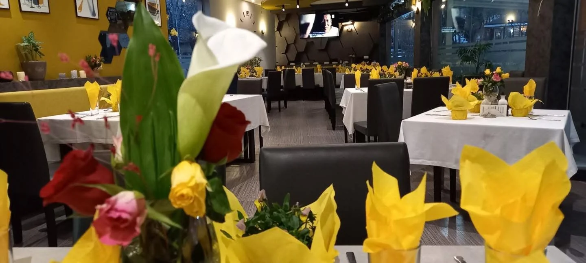
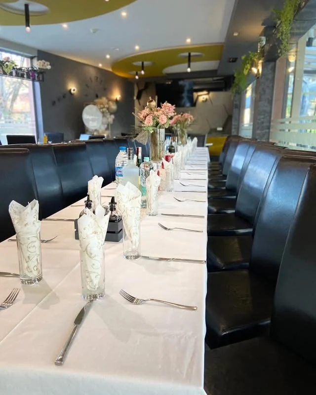

РЕСТОРАНТ · КЮСТЕНДИЛ
Добре дошли
Добре дошли
в Терасата
Място за обяд, вечеря и приятни срещи.
Кюстендил, ул. „Шейново“ №10
ПОНЕДЕЛНИК – ПЕТЪК
Обедно меню
За · До изчерпване
Поръчки за вкъщи до 11:30 ч.Отвори страницата

ЗАПОВЯДАЙТЕ ПРИ НАС
Място за хубави моменти
В „Терасата“ можете да се съберете за обяд, вечеря или просто за приятен разговор. Ресторантът разполага с вътрешни и външни пространства на два етажа.
Намираме се в Кюстендил, на ул. „Шейново“ №10.
Как да ни откриетеЗА ВАШИТЕ ПОВОДИ
Празненства
и събития
Рождени дни, кръщенета, семейни и фирмени събирания — с възможност за избор на пространство според предпочитанията ви.
Предлагаме готови куверти и индивидуални менюта. Подробностите се уточняват по телефона.

НОВИНИ И ПРЕДЛОЖЕНИЯ
Актуално в Терасата
АТМОСФЕРАТА
Отблизо
ОЧАКВАМЕ ВИ
Заповядайте в „Терасата“
гр. Кюстендил, ул. „Шейново“ №10
Всеки ден от 10:00 до 00:00 ч.